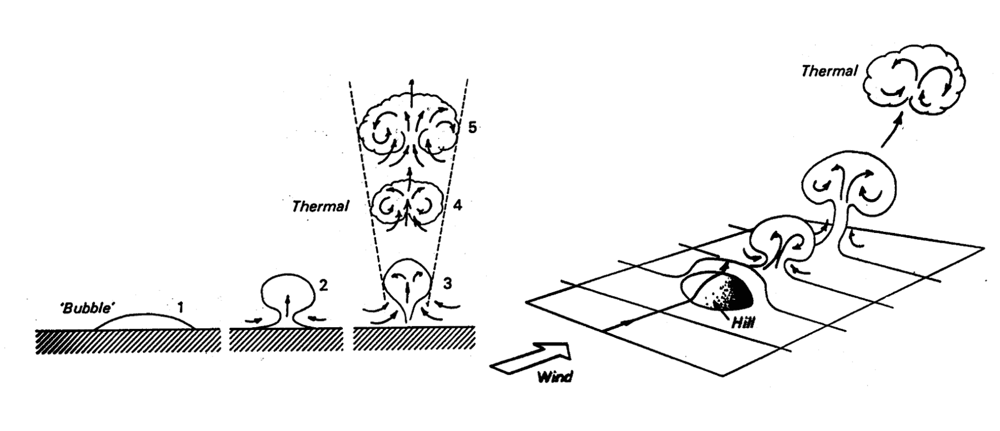
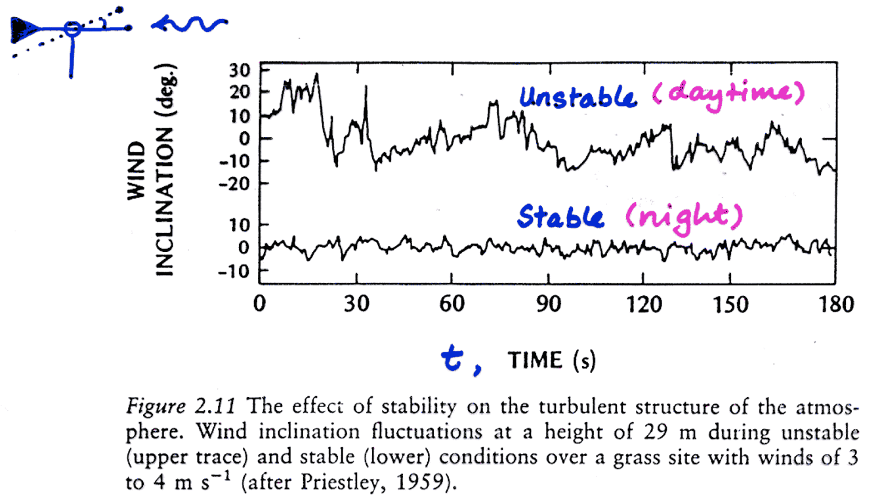
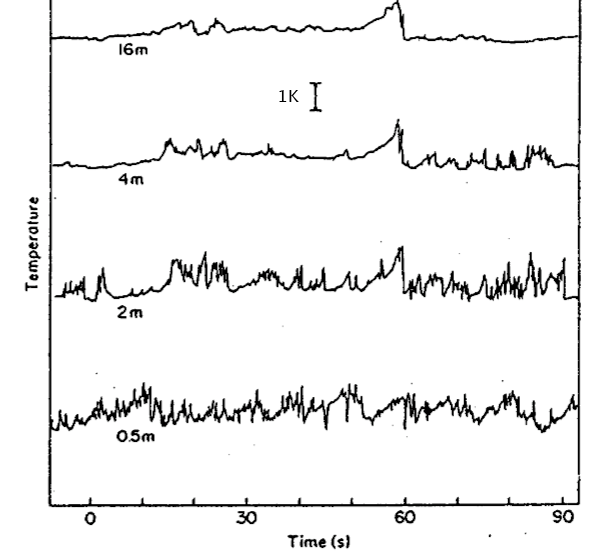

Turbulence and Convection
Mixing of the atmosphere
Learning Objectives
- Understand what ‘turbulence’ is.
- Describe what causes a flow to be turbulent.
- Explain how can we quantify the degree of turbulence.
- Understand how this small scale randomness can impact larger scale processes.
- Explain how we can describe / model convective transport.
Class Conduct
Talking during class can disrupt the learning experience of your classmates.
- It is okay to quietly ask your neighbors questions or discuss issues relating to class content
- It is not okay to have loud/long conversations
Class Conduct (iClicker)
Talking during class can disrupt the learning experience of your classmates.
- True
- False
Energy Transfer
Laminar vs. Turbulent Flow
Laminar flow: parallel streamlines
- Mixing is inefficient, only occurs by diffusion
Turbulent flow: irregular streamlines
- Mixing is very efficient and occurs mainly by convection
Turbulence
Turbulence is a feature of flows, not fluids.
Turbulent flows are very efficient in equalizing temperature and concentration gradients:
- In the Atmosphere, turbulent flows are 105 times more efficient than molecular diffusion
Eddies
Coherent parts within the flow which have the same properties.
Eddies exist in a wide range of different sizes
- “Big whorls have little whorls which feed on their velocity, and little whorls have lesser whorls, and so on to viscosity.”
- Richardson, 1922
- “Big whorls have little whorls which feed on their velocity, and little whorls have lesser whorls, and so on to viscosity.”
Eddies
Coherent parts within the flow which have the same properties.
Eddies exist in a wide range of different sizes
The smallest eddies dissipate to heat
Forced (Mechanical) Convection
Wind moving past obstacles (trees, buildings, etc.) creates eddies mechanically by disturbing flow.
- Eddy size related to the size of the obstacle and flow velocity

Forced (Mechanical) Convection
Air moving at different speeds, or in different directions, creates shear stress.
- Causes turbulence and eddies
- Explains the turbulence you feel in an airplane
Forced (Mechanical) Convection
Wind moving over a natural surface experiences skin friction as it drags along
- Greater over rough surfaces

Forced (Mechanical) Convection
Requires a continual supply of kinetic energy from the flow. It comes from the mean wind speed.
- Wind is driven by pressure/temperature gradients at larger scales (we’ll discuss this later)
Forced (Mechanical) Convection
We can have three different scenarios that create turbulence mechanically

Free (Thermal) Convection
Surface heating differences → density differences → buoyancy differences → convection.

Free (Thermal) Convection
Buoyant parcels are often semi-organized into ‘plumes’; rising thermals form convection cells.
T.R. Oke (1987)
Free (Thermal) Convection

Intense Convection > Thunderstorm
Turbulence (iClicker)
Which of the following characteristics is not applicable to a turbulent flow?
- A Mixing is very efficient
- B Flow is highly irregular with 3D curved streamlines
- C Exchange only occurs by molecular diffusion
- D A range of eddies of different scale exist
- E Produced by mechanical and/or thermal processes
Eddy Size and Source of Convection
Day: wide range of eddy sizes
- Free convection (heating)
- Forced convection (wind)
Night: Eddies are small
- Forced (wind)

Turbulence & Air Temperatures
- Nearest the ground with both small and large eddies
- At greater heights only the buoyant plumes remain (large eddies).
- The intermittent convection ‘plumes’ can be traced as they move upward

Reynolds Decomposition
Turbulent properties appear chaotic, but can be analyzed by deconstructing them into two parts:
- The time mean (e.g., \(\bar{a}\))
- The instantaneous deviation from the mean (e.g., \(a^{\prime}\))
This is called Reynolds’ decomposition
\[ a = \bar{a} + a^{\prime} \qquad(1)\]

Convective transport
Eddies in a turbulent flow fulfill the same role as molecules do in molecular diffusion.
- Convection transports heat, mass and momentum as the eddies ‘jump’ up and down.
Flux Gradient Method
For sensible heat flux we can write:
\[ H_s = -K C_a \frac{T_2 - T_1}{z_2 - z_1} \qquad(2)\]
\(K\) is the eddy diffusivity (m2 s-1) and \(C_a\) is the heat capacity of dry air
Note the similarity to Fouriers Law!
Eddy Diffusivity
\(K\) varies as a function of the intensity of the turbulence and therefore varies
- Wind speed > \(K\) will increase as a function of wind speed
- Stability > \(K\) is greater for unstable conditions
- Surface roughness
- All else equal \(K\) will be higher for a rougher surface
- \(K_{forest} > K_{water}\)
- All else equal \(K\) will be higher for a rougher surface
Flux Gradient Method
Similar equations can be written for the fluxes of H2O, CO2, etc.
\[ F = -K C^* \frac{f_2 - f_1}{z_2 - z_1} \qquad(3)\]
- Here; \(F\) is the flux of some property (\(f\)), and \(C^*\) is a “unit conversion constant”
- Note: Equation 3 is for example only, you won’t be asked to evaluate it
- You will be asked to evaluate Equation 2
Measuring Sensible Heat Flux
Test your knowledge
What is the direction of the sensible heat flux density \(H_s\)?
Example Calculation
Assume \(K\) = 0.25 m2 s-1 and \(C_a\) = 1200 J m-3 K-1, what is H?
\(H_S = -K C_a \frac{T_2 - T_1}{z_2 - z_1}\)
- A 300 W m-2
- B -300 W m-2
- C 600 W m-2
- D 150 W m-2
- E -150 W m-2
Example Calculation
Assume \(K\) = 0.25 m2 s-1 and \(C_a\) = 1200 J m-3 K-1, what is \(H_S\)?
\(H_S = -K C_a \frac{T_2 - T_1}{z_2 - z_1}\)
- A 300 W m-2
Stable vs Unstable
In which condition do you think K is generally higher?
- A Stable
- B Unstable
Effect of Surface Roughness
Assume high wind speed and little heating. Which landscape do you think has the highest \(K\) (at 20m above ground)?
Convective Transport
Transport is accomplished because each eddy has a vertical velocity (\(w\)) and a concentrations (\(c\))
- \(w\) wets the rate and direction of transport of various atmospheric properties (\(T\), \(\rho_v\), etc.)
Convective Transport
The instantaneous flux density is the product of \(w^{\prime}\) and \(c^{\prime}\).
- The average flux density is found by counting all the instantaneous products (w’ and c’) summing them, and averaging over the time period:
Reynolds Notation
A flux density is the average of all the instantaneous products of the vertical speeds of the eddies and the properties they carry:
\[ F_c = \bar{w^{\prime}c^{\prime}} \qquad(4)\]
- \(w^{\prime}\) and \(c^{\prime}\) are the instantaneous vertical wind velocity and concentration of an entity
- The concentrations must be measured within about 30 cm of where w is measured
- These multiplications must be made typically 20 times each second and averaged over larger time intervals (usually 30 minutes).
- This means we must do 36,000 multiplications per 30 minutes!
Eddy Covariance Method
This is called the eddy covariance method because the expression on the right Equation 4 is called the covariance of \(w^{\prime}\) and \(c^{\prime}\)
- For the case of sensible heat flux density we write:
\[ F_c = C_a \bar{w^{\prime}c^{\prime}} \qquad(5)\]
- Where \(C_a\) is the heat capacity of air (1200 J m-3 K-1)
Eddy Covariance Systems
Example - Sensible heat flux density
Latent Heat Flux Density
For many ecosystems, with a sufficient moisture supply latent heat flux \(H_L\) will exceed sensible heat flux \(H_S\).
- \(H_L\) is controlled by evapotranspiration from the ecosystem::
- Evaporation (from surfaces) + transpiration (from plants)
Take home points
- Measurement of convective exchange is more difficult compared to conduction / diffusion.
- Analogous to laminar flow is the K-theory - Problem: difficult to get reasonable values for eddy diffusivities (change over with stability, turbulence intensity etc.).
- Direct measurement using eddy covariance method is possible - but requires sophisticated and expensive instrumentation and more tedious data analysis.
- The same fluid can flow laminar or turbulent.
- Eddies are coherent parts of the flow that show homogeneous properties.
- Mechanical and thermal convection create eddies (turbulence).
- We can use Reynold’s notation to separate a signal into a turbulent and a mean part.